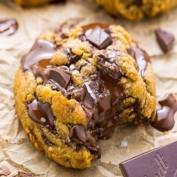

About Joo'kies 🍪
Joo'kies adalah merek cookies dough yang menawarkan berbagai varian kue kering dengan cita rasa lezat dan tekstur yang sempurna. Setiap cookies diproduksi dengan bahan-bahan berkualitas tinggi dan dirancang untuk memberikan pengalaman rasa yang memuaskan di setiap gigitan. Merek Joo'kies dikenal dengan pilihan rasa yang kreatif, mulai dari varian klasik seperti chocolate, salted caramel, peanut butter, red velvet, matcha, almond choco, banana, strawberry, dan cheese cake . Jookies hadir dalam kemasan yang elegan dan praktis, menjadikannya pilihan ideal untuk dinikmati bersama keluarga, teman, atau sebagai hadiah spesial. Dipanggang dengan teknik yang cermat, cookies ini memiliki keseimbangan sempurna antara renyah di luar dan lembut di dalam. Jookies juga memperhatikan kesehatan konsumen dengan menyediakan pilihan cookies bebas gluten dan rendah gula, sehingga dapat dinikmati oleh berbagai kalangan. Singkatnya, Joo'kies bukan hanya sekadar cookies; mereka adalah pengalaman kuliner yang menghadirkan kelezatan dan kualitas dalam setiap sajian.
Cookies dough rasa peanut butter memiliki cita rasa yang kaya dan menggugah selera dengan dominasi rasa kacang yang lembut dan sedikit gurih. Adonan ini memiliki tekstur yang lembut namun sedikit padat, khas dari selai kacang yang digunakan sebagai bahan utama. Setiap gigitan menawarkan perpaduan sempurna antara manisnya adonan cookie dan kekayaan rasa kacang yang creamy, memberikan sensasi hangat dan memuaskan. Cookies dough ini sering dilengkapi dengan potongan kacang untuk menambah kerenyahan di setiap gigitan, menciptakan kontras tekstur yang menarik antara kelembutan adonan dan garingnya potongan kacang. Rasa peanut butter yang dominan membuat cookies ini menjadi pilihan sempurna bagi para pecinta kacang, memberikan rasa yang familiar dan memanjakan dengan sentuhan yang sedikit asin untuk menyeimbangkan manisnya adonan.
Cookies dough rasa peanut butter choco menawarkan perpaduan yang memikat antara dua rasa favorit: selai kacang yang kaya dan cokelat yang manis. Adonan ini memiliki tekstur lembut dan sedikit padat karena adanya peanut butter, dengan sentuhan creamy yang mengisi mulut di setiap gigitan. Rasa gurih dan kaya dari selai kacang berpadu sempurna dengan manisnya potongan cokelat atau chocolate chips yang meleleh ketika dipanggang, menciptakan harmoni rasa yang memanjakan lidah. Sensasi gigitan pertama mengungkapkan rasa kacang yang gurih dan buttery, diikuti oleh kejutan manis dari cokelat yang lumer. Kombinasi ini memberikan kontras yang menyenangkan antara rasa manis, gurih, dan sedikit asin, membuat setiap potongan cookies dough ini menjadi pengalaman yang memuaskan. Cookies dough peanut butter choco cocok bagi pencinta rasa kompleks namun familiar, menggabungkan kekayaan tekstur dan cita rasa yang menggoda.
Cookies dough rasa red velvet memiliki daya tarik yang unik dengan warna merah yang khas dan rasa yang mendalam, berpadu sempurna antara manis, lembut, dan sedikit rasa cokelat yang halus. Adonan ini menggabungkan kelezatan klasik kue red velvet dengan tekstur kenyal khas cookies dough, menciptakan pengalaman yang mewah di setiap gigitan. Rasa cookies dough red velvet cenderung memiliki sentuhan lembut vanila yang berpadu dengan aroma cokelat yang ringan, memberikan keseimbangan rasa manis dan sedikit asam. Biasanya, adonan ini dilengkapi dengan potongan cokelat putih atau krim keju (cream cheese) yang memberikan kejutan rasa manis dan creamy, menambah lapisan kelezatan pada setiap gigitan. Cookies dough ini tidak hanya memanjakan lidah, tetapi juga memikat secara visual dengan warna merah yang menggoda, menjadikannya pilihan yang sempurna untuk dinikmati sebagai camilan spesial atau hadiah istimewa bagi pencinta rasa manis yang elegan.
Cookies dough rasa choco adalah pilihan klasik yang disukai banyak orang, dengan rasa cokelat yang kaya dan memanjakan. Adonan ini memiliki tekstur yang lembut dan kenyal, dengan rasa cokelat yang dalam dan intens. Terbuat dari kombinasi bubuk kakao atau cokelat leleh dan potongan chocolate chips, setiap gigitan menawarkan pengalaman yang penuh dengan rasa cokelat yang pekat. Kelezatan cookies dough ini terletak pada keseimbangan antara manis dan kepahitan cokelat, yang membuatnya terasa memuaskan tanpa terlalu manis. Ketika dipanggang, potongan cokelat meleleh dan memberikan sensasi lumer yang menambah kenikmatan pada tekstur lembut adonan. Cookies dough rasa choco cocok dinikmati dalam berbagai kesempatan, baik sebagai camilan manis saat santai atau suguhan spesial yang memanjakan. Perpaduan tekstur yang kenyal dengan rasa cokelat yang kaya membuatnya menjadi favorit yang sulit ditolak.
Cookies dough rasa stroberi menawarkan cita rasa segar dan manis yang menggugah selera. Adonan ini biasanya mengandung pure stroberi atau potongan stroberi kering yang memberikan aroma buah yang khas dan warna merah muda yang cerah. Teksturnya lembut dan sedikit kenyal, dengan kombinasi rasa manis dari gula dan asam alami dari stroberi, menciptakan keseimbangan yang menyenangkan di setiap gigitan. Untuk menambah kelezatan, sering kali ditambahkan potongan cokelat putih yang melengkapi rasa stroberi dengan sentuhan manis yang creamy. Saat dipanggang, cookies ini mengeluarkan aroma buah yang menggoda, menjadikannya pilihan yang sempurna sebagai camilan atau hidangan penutup yang ceria dan menyegarkan!
Cookies dough rasa almond choco memiliki perpaduan rasa yang kaya dan menggugah selera. Adonan ini biasanya terbuat dari tepung, gula, mentega, dan tentunya, almond yang dihancurkan atau bubuk almond, yang memberikan rasa kacang yang gurih dan aromatik. Selain itu, ada potongan cokelat hitam atau susu yang meleleh saat dipanggang, menambah kekayaan rasa. Kombinasi antara rasa almond yang renyah dan cokelat yang manis menciptakan keseimbangan yang sempurna. Teksturnya cenderung chewy di bagian dalam dengan sedikit garing di luar, menjadikannya camilan yang sangat memuaskan. Warna adonan biasanya cokelat keemasan dengan bintik-bintik cokelat, menjadikannya terlihat sangat menggoda dan menggugah selera!
Cookies dough rasa pisang memiliki cita rasa yang manis dan kaya, dengan aroma pisang yang harum. Adonan ini biasanya mengandung pure pisang yang memberikan kelembapan, serta tambahan gula dan vanili untuk menambah kedalaman rasa. Teksturnya cenderung lembut dan sedikit kenyal, dengan potongan pisang kering atau cokelat yang memberi kejutan di setiap gigitan. Warna adonan umumnya kekuningan, menciptakan tampilan yang menggugah selera. Saat dipanggang, cookies ini akan menghasilkan aroma yang sangat menggoda, dengan rasa pisang yang dominan dan nuansa manis yang membuatnya cocok sebagai camilan atau hidangan penutup yang lezat.
Cookies dough rasa cheesecake adalah adonan kue yang terinspirasi dari rasa cheesecake klasik. Teksturnya lembut dan kenyal, dengan cita rasa creamy dan sedikit asam yang khas dari keju krim. Biasanya, adonan ini mengandung bahan-bahan seperti krim keju, gula, dan vanili, memberikan rasa manis yang seimbang dengan keju. Dalam adonan ini, seringkali ditambahkan remah biskuit graham untuk memberikan elemen tekstur dan rasa yang mirip dengan dasar cheesecake. Warna adonan cenderung pucat dengan titik-titik coklat dari potongan cokelat atau biskuit, menjadikannya menggoda. Saat dipanggang, cookies ini menghasilkan aroma yang sangat menggugah selera, dengan rasa cheesecake yang kaya di setiap gigitan. Sangat cocok disajikan sebagai camilan atau hidangan penutup yang unik!